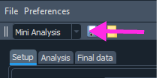
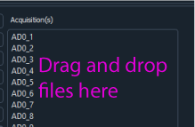

Basic GUI usage¶
The GUI consists of four different modules: Mini analysis, oEPSC, current clamp and filtering. The specific module can be choosen by using the drop-down menu in the top left corner of the interface.
Each module features drag and drop loading. To drag and drop .mat files for first time analysis. Just select your files and drag and drop onto the acquisition area of within each module.
Each module has three main buttons: Analyze acquisition(s), Final analysis and Reset analysis. Analyze acquisitions analyze the acquisition after which you can go through and remove or modified specific paramters. The final analysis button pulls all the data from each acquisition and puts into a table as well as averages data across epochs (1 cells worth of data). Reset analysis clears all plots, data tables and acquisitions from the interface however settings are not reset so one can quickly analyze several cells or even days worth of data at a time.
The analyzed data can be saved before or after the final analysis and loaded back into ClampSuite. The acquisition data is saved into JSON files since these files are portable and can be opened in most programming languages. The settings are saved as YAML files. The final data in the tables are saved to excel files. It is recommended that you save each analysis into a separate folder since it is easier to load the data back into ClampSuite.
Data that has been previously analyzed can be load back into the program by dragging and dropping the folder into ClampSuite. The folder can be dropped anywhere but the Acquisitions area where acquisitions are loaded.